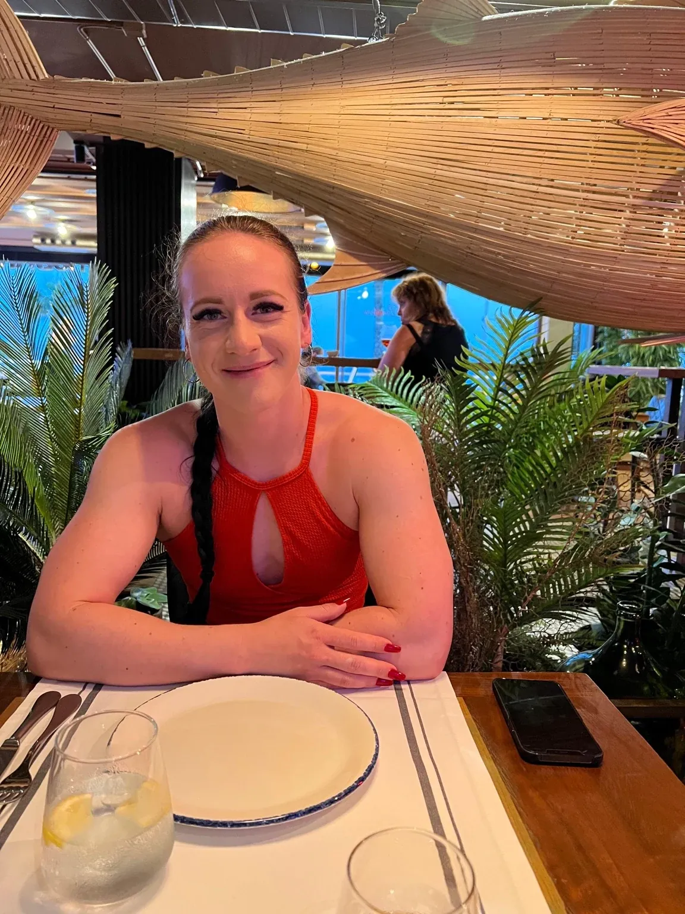

Persönliches Erstgespräch
Wir nehmen uns ca. ein bis zwei Stunden Zeit für deine aktuelle Ernährung, deine Ziele und die praktische Umsetzung. Das Gespräch kann in Uezwil im Aargau oder online via Zoom stattfinden.
Coaching / Ernährung & Supplemente
Ernährung darf zu deinen Zielen passen und Freude machen. Gemeinsam finden wir praktische Möglichkeiten für deinen Alltag.

Wir betrachten deine aktuelle Ernährung, deine Lebensmittelauswahl und die Umsetzung im Alltag. Supplemente werden nach individuellem Bedarf besprochen. Auf Wunsch können Ansätze aus Ayurveda berücksichtigt werden.
Ernährungs- inkl. Supplementplan · Erstgespräch ca. 1–2 Stunden
Vor Ort oder online via Zoom.
Beratung anfragen ↗Vorhandene Laborwerte können im zulässigen Coaching-Rahmen berücksichtigt werden. Medizinische Befunde und auffällige Werte gehören in ärztliche Abklärung.
Ernährungsberatung in Uezwil & online
Wir nehmen uns ca. ein bis zwei Stunden Zeit für deine aktuelle Ernährung, deine Ziele und die praktische Umsetzung. Das Gespräch kann in Uezwil im Aargau oder online via Zoom stattfinden.
Der Ernährungs- inkl. Supplementplan kostet CHF 150.–. Deine Lebensmittelauswahl und Gewohnheiten bilden die Grundlage; mögliche Ergänzungen besprechen wir nach individuellem Bedarf.
Ernährung, Training und Erholung beeinflussen deinen Alltag gemeinsam. Wenn du zusätzlich eine Trainingsplanung möchtest, findest du die Möglichkeiten unter individuelle Trainingspläne.
Lerne Tatjana und ihren Coaching-Ansatz kennen oder frage über die Kontaktseite eine Beratung an.
Dein nächster Schritt
Erzähl mir, wo du stehst und was du verändern möchtest.
Beratungsgespräch anfragen ↗